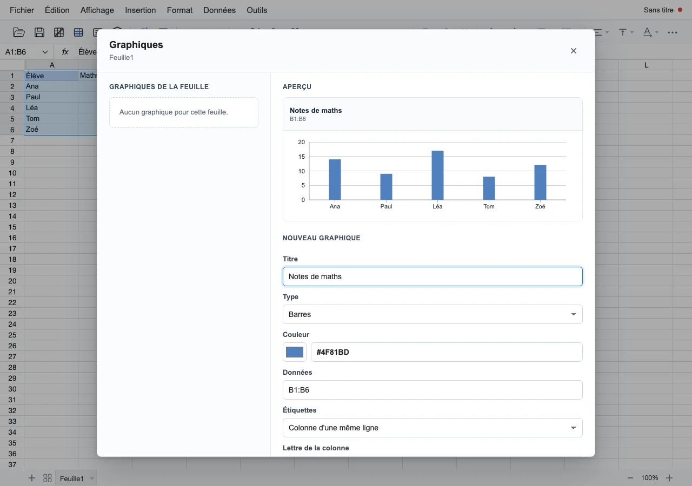
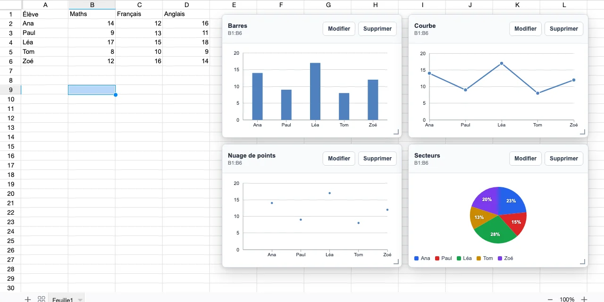
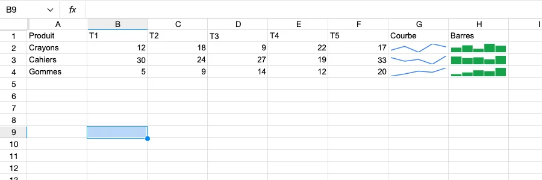

Graphiques et sparklines
Créer un graphique
- Sélectionner les données.
- ou Insertion › Insérer un graphique.
- Choisir le type et les options ; l’aperçu suit.
- Ajouter, puis Fermer.

| Sélection | Interprétation |
|---|---|
| une colonne ou une ligne de nombres | les données |
| deux colonnes | étiquettes dans la première, données dans la seconde |
| deux lignes | étiquettes dans la première, données dans la seconde |
| deux colonnes séparées, choisies avec Ctrl | de même |
Un graphique montre une série : une ligne ou une colonne de données. Les cellules sans nombre, comme un en-tête, sont ignorées.
Types
| Type | Pour | Étiquettes |
|---|---|---|
| Barres | comparer | sous les barres |
| Courbe | une évolution | en abscisse |
| Nuage de points | une relation entre deux grandeurs | ce sont les abscisses, si elles sont des nombres ; sinon 1, 2, 3… |
| Secteurs | des parts ; valeurs positives | dans la légende ou sur les parts |
Jusqu’à 120 valeurs, 24 pour des secteurs.

Options
| Champ | Contenu |
|---|---|
| Titre | obligatoire ; affiché en haut du graphique |
| Couleur | sélecteur ou code #4F81BD ; les secteurs ont leurs propres couleurs |
| Données | la plage : B2:B6 |
| Étiquettes | Sans ; Colonne d'une même ligne (A) ; Ligne d'une même colonne (1) ; Plage personnalisée, de même taille que les données |
| Affichage | valeurs, légende, abscisses, ordonnées, grille |
Déplacer, modifier
- Tirer le bandeau du titre déplace le graphique ; tirer son coin inférieur droit le redimensionne.
- Modifier rouvre la fenêtre, Supprimer l’efface. La fenêtre liste aussi tous les graphiques de la feuille.
- Le graphique suit les données de ses cellules.
Les graphiques sont enregistrés dans le fichier Excel comme de vrais graphiques, et relus par DocCells. Ils ne sont pas imprimés avec la feuille.
Sparklines
La fonction SPARKLINE dessine un graphique miniature dans la cellule.
=SPARKLINE(B2:F2)
=SPARKLINE(B2:F2; {"charttype"\"column"})
=SPARKLINE(B2:F2; {"charttype"\"line"; "color"\"#dc2626"; "linewidth"\2})
=SPARKLINE(B2:F2; {"charttype"\"bar"; "max"\100})
Les options s’écrivent entre accolades : le nom, une barre oblique inverse, la valeur ; un point-virgule entre deux options.
charttype | Dessin | Options propres |
|---|---|---|
"line" (défaut) | courbe | color, linewidth, xmin, xmax, ymin, ymax |
"bar" | barres empilées | max, color1, color2 |
"column" | colonnes | color, negcolor, lowcolor, highcolor, firstcolor, lastcolor, axis, axiscolor, ymin, ymax |
"winloss" | gains et pertes | les mêmes, sans ymin ni ymax |
Options communes : empty ("zero" ou "ignore"), nan ("convert" ou "ignore"), rtl (de droite à gauche). La documentation de SPARKLINE donne toutes les valeurs, avec des exemples.
Pour un dessin plus grand, agrandir la ligne et la colonne, ou fusionner des cellules.